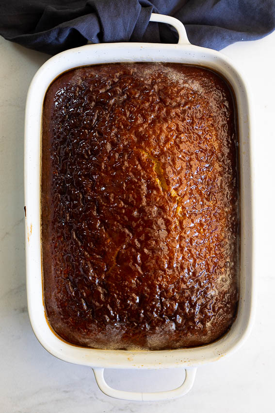
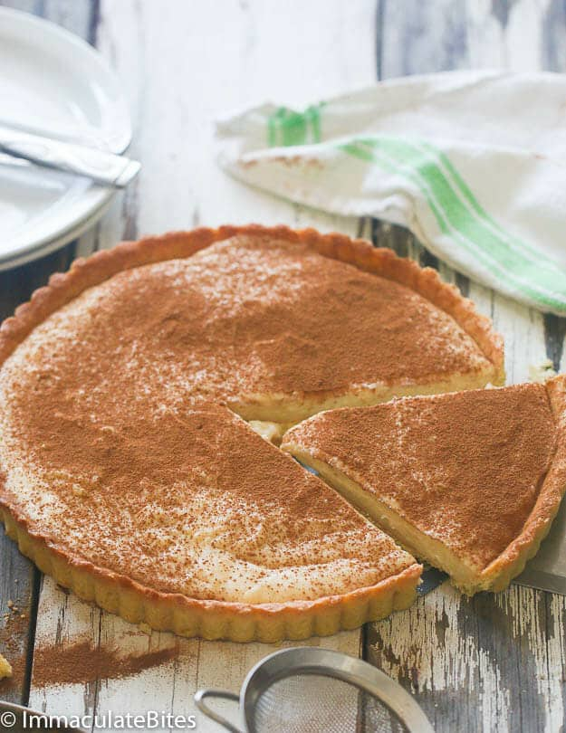
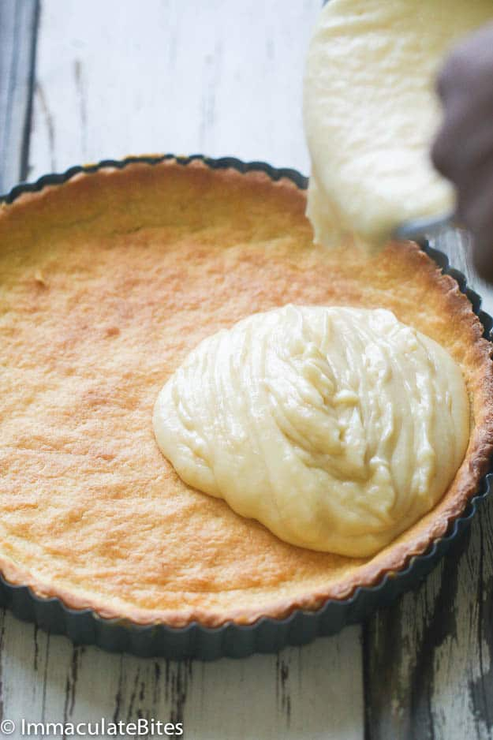
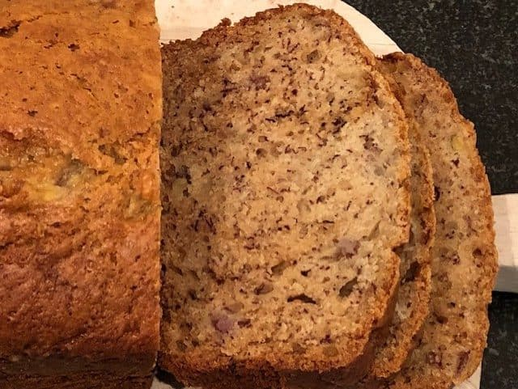

MY FAVOURITE RECIPES
Malva Pudding
Ingredients you will need:
- Butter
- Sugar. I use granulated sugar but brown sugar can be used as substitute.
- Apricot jam/apricot preserves. I use smooth apricot jam but whole fruit jam can be used too.
- White vinegar
- Flour
- Milk
- Eggs
- Bicarbonate of soda/baking soda
- Salt
For the sauce:
- Sugar
- Golden Syrup
- Vanilla extract
- Butter
How to make Malva pudding
- Prepare the pudding batter: Melt the apricot jam, butter, sugar and vinegar together over medium-high heat in a small saucepan. Cool slightly then pour into a large bowl
- Combine dry ingredients: Stir the dry ingredients together in a medium mixing bowl.
- Mix the batter: Add the dry ingredients and milk to the butter mixture, alternating, until the mixture is smooth. Whisk in the eggs.
- Bake: Pour the batter into a greased baking dish then place in a preheated oven and bake for 30 minutes until golden brown and a skewer inserted comes out clean.
- Prepare the syrup: Combine all the syrup ingredients in a small saucepan then bring to a boil and simmer together for 5 minutes. Once the pudding comes out of the oven, pour over the sponge and allow to soak for 10 minutes.
- Serve: Serve the warm pudding with custard, cream or a scoop of ice cream
Tips for the best Malva Pudding:
Ensure all the ingredients are at room temperature before making the
batter.Don't over-bake the pudding. It should be moist and tender.Pour
the hot syrup over the pudding immediately as it comes out of the oven
for maximum absorption.Using golden syrup in the sauce really enhances
the flavor. Maple syrup or honey can be used as substitute.Can you
freeze Malva pudding? Malva pudding freezes very well. Cool the baked
pudding, wrap with foil and freeze for up to 3 months. Reheat from
frozen for 30 minutes or until hot throughout then pour over extra syrup
to make sure it's super moist. Malva pudding can also be made in advance
and kept in the fridge for up to a day in advance. Reheat before
serving.
Can you freeze Malva pudding?
Malva pudding freezes very well. Cool the baked pudding, wrap with foil
and freeze for up to 3 months. Reheat from frozen for 30 minutes or
until hot throughout then pour over extra syrup to make sure it's super
moist. Malva pudding can also be made in advance and kept in the fridge
for up to a day in advance. Reheat before serving.
Measurements and instructions:
Ingredients:
Instructions To make the pudding
Pre-heat the oven to 180°C/350°F and grease a 30cm/11in baking dish.
In a saucepan set over medium-high heat melt together the butter, sugar,
apricot jam and vinegar until the sugar has dissolved and the mixture is
smooth.
Remove from the heat and allow to cool for 5 minutes then pour into a
large mixing bowl. Sift the dry ingredients together then add to the
butter mixture, alternating with the milk, mixing well after each
addition.
Stir in the beaten eggs.
Pour the batter into the prepared dish and place in the oven.
Bake for 30 minutes until the pudding is dark brown and baked
through (a skewer inserted should come out clean).
While the pudding is baking, prepare the syrup.
Bring all the syrup ingredients to a boil and reduce the heat.
Allow to simmer for 5 minutes. Pour the syrup over the pudding as it
comes out of the oven.
Allow to stand for 20 minutes then serve with custard or cream
Nutrition
Calories: 529kcal | Carbohydrates: 80g | Protein: 6g | Fat: 22g |
Saturated Fat: 12g | Polyunsaturated Fat: 2g | Monounsaturated Fat: 6g |
Trans Fat: 1g | Cholesterol: 83mg | Sodium: 281mg | Potassium: 131mg |
Fiber: 1g | Sugar: 61g | Vitamin A: 815IU | Vitamin C: 0.01mg | Calcium:
81mg | Iron: 1mg
Recipe from
Alida Ryder's blog
Milk Tart
It doesn't take much to make this delicious, perfect-for-entertaining tart. This popular South African milk tart qualifies as one of those quick and easy tarts to whip up in a pinch. All the ingredients for this milk tart are right in your pantry - no extra shopping needed and it is all made from scratch. And the best part - it is very comforting and great for the holiday season.
Milk Tart or as the Afrikaans call it Melktert is a creamy milky tart. A little reminiscent of custard pie but more delicate, with a lighter texture and a strong milk presence. Don't wait for this pie to firm up - it just doesn't, more of a pudding with a crust. It is made with a sweet pastry crust often referred to as , the good thing about this pastry is that you do not have to worry about rolling it out - all you do is press the crust into the pie pan - freeze for 30 minutes and then bake without weight. Freezing prevents the pie from rising

You can make the crust ahead of time, bake and leave out until ready to be use. Use store bought pastry pie if you are pressed on time Switch up the flavors, I used nutmeg and cinnamon A lot of recipes call for throwing in a cinnamon stick so it infuses the milk mixture - if you have some handy by all means use it, if not just use cinnamon spice.
Measurements and instructions:
Ingredients Sucre Patee (Pastry Crust):
Instructions Pastry Crust:
Butter or spray a 9-inch pie pan with a removable bottom - making sure
it is has been adequately sprayed.
Set aside Place flour, salt and sugar in a food processor pulse for a
couple of times to mix ingredients.
Throw in butter and pulse until rough dough forms.
Then add egg yolk - pulse until the dough barely comes.
Remove dough place on a work surface - knead just enough to incorporate
all the dough. Working the dough as little as possible.
Do not overwork the dough; otherwise it'll be too tough. When it's
ready, the dough will be barely moistened and come together into a ball.
Lightly press the dough on the prepare pie pan -working from the center
up until the bottom and sides are fully covered with pastry- again be
very gentle when pressing the dough onto the pie pan.
Place pie pan in the freezer and freeze for at least 30 minutes or more
this helps prevent the dough from rising- if you are in a rush brick,
then bake with beans to prevent rising.
Preheat oven to 400 degrees F (205 degrees C) and place rack in center
of oven Bake crust for about 20 to 25 minutes or until the crust is dry
and golden browned. Set aside
Milk Filling:
Place saucepan over medium heat, add butter, nutmeg and milk -bring to a
boil and remove from the heat.
In another bowl, mix together flour, cornstarch, sugar, vanilla and
almond extract- whisk in eggs until smooth.
Gently whisk into the saucepan making sure there are no lumps Now return
the pan back on the stove -keep stirring constantly until in starts to
bubble. Cook for about 5-6 minutes.
Remove from heat and pour mixture into the baked pastry shell Sprinkle
with cinnamon. Chill until ready to be served.
Recipe from
Immaculate Bites
Banana Bread-with oil no butter
Banana Bread with Oil (No Butter Banana Bread) This banana bread with oil recipe is tasty and simple to make. Your family will love this delicious no butter banana bread. My easy recipe simply replaces the butter used in most banana bread recipes with vegetable oil. It is the perfect solution if you have run out of butter late at night (“$@&%! No more butter in the fridge. How do I make banana bread now?“), can't get to the store (due to snow, rainstorms, etc.) and/or want to reduce the saturated fat associated with butter. Moreover, this no butter banana bread tastes just like a traditional old-fashioned banana bread.
Measurements, instructions and ingredients
Servings: Roughly 12 slices
Equipment Needed: Measuring cup & spoons, mixing bowl, long wooden spoon, 9 by 5 inch metal bread pan, oven mitts, silicon spatula, cooling rack and an oven.
Instructions
Preheat oven to 325 degrees F (163 degrees C).
Mash bananas with a fork. Lightly beat eggs.
Mix bananas, vegetable oil, eggs and sugar together in a large mixing
bowl. Stir until completely mixed.
Mix in the remaining ingredients.
Stir until the batter is fully mixed. FYI – I prefer to use a large
spoon to mix the batter. An electric mixer can overmix the batter and
this can lead to gummy & rubbery banana breads.
Optional – If you want to enhance this “basic” no butter banana bread,
you can stir in a cup of your family’s favorite dessert ingredient (e.g.
chocolate chips or chopped walnuts) after you have mixed the batter.
Pour the finished batter into a nonstick bread pan. Smooth out the top
of the batter within the bread pan.
Bake in the oven at 325 F (163 C) for 65-70 minutes.
Take out of the oven and let the banana bread cool down in the bread pan
for 10 minutes.
Do not remove the banana bread from the bread pan during this 10
minute cool down period.
Use oven mitts as the bread pan will be very hot coming out of the oven.
FYI- Do not skip this step as the “cool down” completes the baking
process.
After 10 minutes, remove the banana bread from the bread pan.
Place the banana bread on a cooling rack in order to completely cool.
This cool down may take 1-2 hours. Gently slide a silicon spatula
between the banana bread and the bread pan walls if the banana bread is
stuck in the pan.
Recipe from
Bread Dad